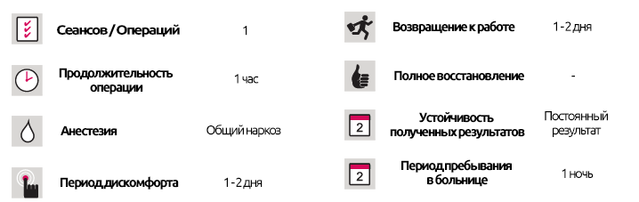

Эстетика половых органов (вагинальная эстетика)
Эстетика половых органов (вагинальная эстетика)
КРАТКОЕ ОПИСАНИЕ ЛЕЧЕНИЯ
Физические и эстетические проблемы человека, связанные с его половыми органами могут испортить качество его жизни и сексуальное наслаждение. Эти проблемы можно уменьшить при помощи проведения эстетических операций на половых органах.
Причины проведения вагинальных эстетических операций
У женщин обычно возникают проблемы с гениталиями по очевидным причинам - врожденных, при родах и старении. Эти проблемы могут негативно повлиять на сексуальную жизнь женщин и их партнеров. Хотя это рассматривается как запретная тема, хорошо известно, что при помощи небольших хирургических вмешательств можно добиться значительных изменений. Можно провести операции, чтобы исправить проблемы, такие как дефекты, асимметрия и провисание влагалищных губ.
Хирургические операции в области гениталий могут проводиться индивидуально или параллельно.
Жировые инъекции: область гениталий теряет жировую ткань, а наружные вагинальные губы становятся тонкими и провисают после экстремальной потери веса, воздействия силы тяжести и преклонного возраста. Жир, взятый из других частей тела пациента, очищается, а затем вводится как в лобковые области, так и в наружные влагалищные губы, создавая полный и молодой вид.
Лабиапластика: это хирургическая процедура для уменьшения внутренних губ из-за различий в форме, размерах и внешнем виде наружных половых органов. Принимая во внимание, что размер половых губ нормального человека составляет 1,5 см, у тех пациенток, которые решили пройти лабиопластику, их размер составляет приблизительно 4 см. Для достижения желаемого внешнего вида чувствительные органы защищены во время процедуры.
Реконструкция девственной плевы: Девственная плева может быть восстановлена с помощью стежков, но успех процедуры зависит от того, когда произошел разрыв плевы и как ткань реагирует на лечение. Основная цель этой процедуры - восстановить прежнюю анатомическую структуру девственной плевы и обеспечить кровотечение во время первого полового проникновения.
Вагинопластика: это хирургическая процедура, используемая для коррекции повышенной эластичности наружных стенок влагалища в результате беременности и родов. Эта проблема может быть решена путем сужения влагалища с помощью простой хирургической процедуры.
Тип анестезии и продолжительность процедуры
Это деликатное хирургическое вмешательство, которое необходимо выполнить в операционной. Его можно проводить под общим или местным наркозом или под седацией. Эстетические операции на гениталиях длятся 1-2 часа в зависимости от метода и процедуры.
Период восстановления
Большинство эстетических операций на половых органах не являются болезненными, и с какими болями можно легко справиться с помощью болеутоляющих средств. Большинство пациентов могут вернуться домой в тот же день.
На что обратить внимание после операции
- Вы можете принять душ через 2 дня после процедуры.
- После лабиопластики или вагинопластики необходимо очищать область специальным раствором.
- Нужно уделять особое внимание во время сидения и вставания.
- Следует избегать сексуальных отношений в течение 3 недель (сроки могут отличаться в случаях реконструкции девственной плевы).